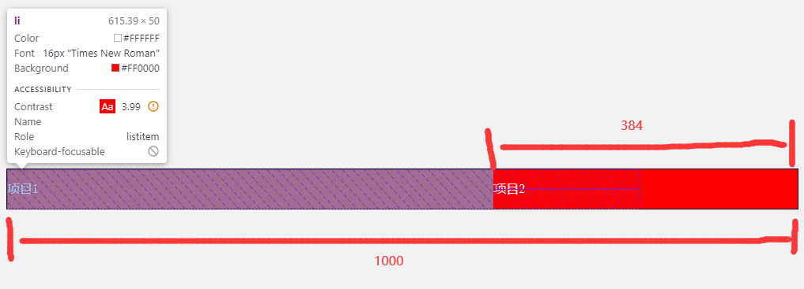

Flexbox 可以针对页面中某一个区域，控制其中元素的顺序、大小、分布及对齐。这个区域内的盒子可以沿两个方向排列：默认水平排列，也可以垂直排列。这个排列方向称为主轴。
与主轴垂直的方向称为辅轴，主轴方向的这个尺寸为主尺寸。
ul {
display: flex;
}
如果把 flex-direction: row-reverse，那么选项就会集中在右侧，而且变成从右向左排列。
ul {
display: flex;
flex-direction: row-reverse;
}
如果不指定大小，Flex 容器内的项目会自动收缩，也就说，一行中的各项会收缩到各自的最小宽度，或者一列中的各项会收缩到各自的最小的高度，以恰好可以容纳自身内容为限。
Flexbox 对子项的排列有多种方式，沿主轴的排列叫 排布，沿辅轴的排列则叫 对齐。
用于指定排布方式的属性是 justify-content，其默认值为 flex-start，表示左对齐。如果改成 flex-end，所有项就都会挤到右侧。另外 3 个关键字的效果：center、space-between、space-around。
创造一项位于一侧，其余项位于另一侧的布局
li:nth-child(1) {
margin-right: auto;
}
ul {
display: flex;
min-height: 100px;
}
li {
width: 100px;
}
子项自动就和父元素等高了，实际上，控制辅轴对齐的属性 align-items，其默认值是 stretch（拉伸）。也就是说子项默认拉伸，以填满可用空间。其他的关键字还有 flex-start、center、flex-end，
最后，还可以使用 baseline 关键字，将子项中文本的基线与容器基线对齐，如果子项大小不一，而你希望它们在辅轴上虽然位置不同，但本身对齐，那么就可以采用这种方法。
将第二项字体设大一点
ul {
display: flex;
min-height: 100px;
align-items: baseline;
}
li {
min-width: 100px;
height: 50px;
background-color: red;
list-style: none;
text-align: center;
line-height: 50px;
}
li:nth-child(2) {
background-color: aqua;
font-size: 30px;
height: 70px;
}
还可以在辅轴上指定个别项的对齐方式。比如，让 “HOME” 项对齐到左上角，让其他项对齐到右下角。
ul {
display: flex;
align-items: flex-end;
}
li:nth-child(1) {
margin-right: auto;
align-self: flex-start;
}
Flexbox 可以让我们轻松解决垂直对齐问题，在容器里面只有一个元素时，只要将容器设置为 flex，再将需要居中的元素的外边距设置 auto 就行了。
<div class="flex-container">
<div class="flex-item">
<h2>Not so lost in space</h2>
<p>This item sits right in the middle of its container...</p>
</div>
</div>
.flex-container {
width: 100%;
height: 100%;
display: flex;
}
.flex-item {
margin: auto;
background-color: #fff;
padding: 50px 20px;
}
如果 Flex 容器中有多个元素，
.author-meta {
display: flex;
flex-direction: column;
justify-content: center;
align-items: center;
}
flex-basis: 控制项目在主轴方向上、经过修正之前的 “首选” 大小（width 或 height），可以是长度值，如 18em、百分比，也可以是关键字 auto（默认值）。关键字 auto 的意思好像是把 width 或 height 设置为自动，但实际上并不是那么回事，这里 auto 值的意思是这个项目可以从对应的属性（width 或 height）那里获得主尺寸，如果设置了相应属性的话。如果没有设置主尺寸，那么该项目就根据其内容确定大小，也可以设置 content 的值，意思是根据项目内容确定大小，但是会忽略通过 width 或 height 设置的主轴尺寸，注意，content 关键字是后来才加入 Flexbox 的，支持程度可能不一致。
flex-grow: 在通过 flex-basis 为每一项设置了首选大小之后，如果还有剩余空间，该系数表示该如何处理。其值是一个数值，表示剩余空间的一个比值。默认值为 0，表示从 flex-basis 取得尺寸后就不再扩展。
flex-shrink: 也是一个弹性系数，与 flex-grow 类似，但作用相反，换句话说，如果空间不够，该如何收缩？默认值为 1，表示如果空间不够，所有项都会以自己的首选尺寸为基准等比例收缩。
步骤:
(1) 检查 flex-basis，确定假想的主尺寸
(2) 确定法实际的主尺寸，如果按照假想的主尺寸把各项排布好之后，容器内还有剩余空间，那么它们可以伸展。伸展多少由 flex-grow 系数决定，相应的，如果容器装不下那么多项，则根据 flex-shrink 系数决定各项如何收缩。
<ul class="navbar">
<li>Short</li>
<li>Looooooong</li>
</ul>
.navbar {
width: 1000px;
display: flex;
}
.navbar li {
flex-basis: auto;
}
给 flex-basis 设置具体的数值
li {
flex-basis: 200px;
}
因为有剩余空间可分配，所以可以考虑 flex-grow 了，默认情况下，flex-grow 的值为 0，对各项的大小没有影响，假设此时把 flex-grow 的值设置成 1 会怎么样呢？
.navbar li {
flex-basis: auto;
flex-grow: 1;
}
根据结果分析，flex-grow: 1 是将剩余的空间一分为二，然后分别加到原本的两个 li 的宽度之上。
假设给它们分别设置不用的 flex-grow，类似这样：
.navbar li:nth-child(1) {
flex-grow: 3;
}
.navbar li:nth-child(2) {
flex-grow: 1;
}
这会导致第一项分得剩余空间的 3/4，第二项分得 1/4。
假设第一步中 flex-basis 的值是 0，那在这一步就不会给项目分配空间了，这种情况下，容器内部的全部空间都会留在第二步再分配，就是根据伸缩系数切分，
.navbar li {
flex-basis: 0;
flex-grow: 1;
}
接下来要使用 flex 这个简写属性一次性设置 flex-grow、flex-shrink 和 flex-basis 属性，顺序就是这样，值以空格分隔：
.navbar li {
flex: 1 0 0%; /* 与上面效果等同 */
}
注意： 最后一个 flex-basis 值加了百分号，这是因为简写法中的 flex-basis 必须带单位，因为这里要么加百分号，要么就写成 0px。
如果想让第一个项目占据的空间是其他项目的 2 倍，
.navbar li {
flex: 1 0 0%;
}
.navbar li:nth-child(1) {
flex-grow: 2;
}
当项目宽度总和超过容器宽度时，Flexbox 会按照 flex-shrink 属性来决定如何收缩它们。
假设：
li:nth-child(1) {
flex: 1 1 800px;
}
li:nth-child(2) {
flex: 1 1 500px;
}

加在一起的首选宽度（800px + 500px = 1300px），超出了容器宽度 300px，而且两个项目的 flex-shrink 值都是 1，它们会根据自己的 flex-shrink 系数和 flex-basis 的值来按比例收缩。
具体来说，每个项目先用自己的 flex-shrink 乘以自己的 flex-basis，然后再用乘积除以每一项的 flex-shrink 与 flex-basis 的乘积之和，最后再拿得到的比例系数去乘以超出的宽度，从而得到该项目收缩的空间数量。
以下是求第一个项目要收缩的量的过程：
/*
((800 x 1) / ((800 x 1) + (500 x 1))) * 300 = 184.6;
((500 x 1) / ((800 x 1) + (500 x 1))) * 300 = 115.4;
*/
<ul>
<li>
<a href="">Binary planet</a>
</li>
<!-- 更多 -->
</ul>
.tags {
width: 1000px;
outline: 1px solid #000;
list-style: none;
margin: 0;
padding: 1em;
}
li {
display: inline-block;
margin: 0.5em;
}
a {
position: relative;
display: block;
padding: 0.25em 0.5em 0.25em 0.25em;
background-color: #c9e1f4;
color: #28448f;
border-radius: 0 0.25em 0.25em 0;
line-height: 1.5;
text-decoration: none;
text-align: center;
}
a::before {
position: absolute;
content: "";
width: 0;
height: 0;
border: 1em solid transparent;
border-right-width: 0.5em;
border-right-color: #c9e1f4;
left: -1.5em;
top: 0;
}
接下来该 Flexbox 上场了，首先，把列表元素转换为 Flex 容器，再通过 flex-wrap 属性的 wrap 值告诉它允许子元素折行：
.tags {
/* ... */
display: flex;
flex-wrap: wrap;
}
(1) 折行与方向
首先，可以反转行中标签的排布方向，把 flex-direction 的值改为 row-reverse，所有标签一下子就变成了从右上角起从右向左排布，每一行都变成了右对齐，
.tags {
/* ... */
display: flex;
flex-direction: row-reverse;
flex-wrap: wrap;
}
也可以反转垂直排布的方向，让第一行从底部开头，然后向上折行，
.tags {
/* ... */
display: flex;
flex-direction: row-reverse;
flex-wrap: wrap-reverse;
}
(2) 多行布局中可伸缩的大小
Flexbox 对多行布局的另一个好处就是，可以利用可伸缩的大小均匀填充每一行，flex-grow 的计算是以行为单位的，因此项目的可扩展空间以行的宽度为限。
.tags {
width: 1000px;
display: flex;
flex-wrap: wrap;
}
.tags li {
flex: 1 0 auto;
}
应用 flex-grow 系数，创造出完美的整行效果。
此时，稍微缩小一点浏览器窗口，就会导致最后一个标签折行，从而创建一个新行，看着很不舒服，
要解决这个问题，可以给所有标签设置 max-width，限制可伸缩的范围
.tags li {
flex: 1 0 auto;
max-width: 14em;
}
(3) 对齐所有行
如果在标签列表容器中，我们设置了 min-height: 300px，就可以知道相对于容器对齐行或列的 align-content 属性的效果了。默认情况下，这个属性的值是 stretch，意思是每一行都会拉伸以填充自己应占的容器高度。
.tags {
display: flex;
flex-wrap: wrap;
min-height: 300px;
/* align-content: stretch; 在这里是默认值 */
}
使用 Flexbox 的 order 属性，可以完全摆脱项目的源代码中顺序的约束。只要告诉浏览器这个项目排第几就行了。
默认情况下，每个项目的 order 值都是 0，意味着按照它们在源代码中的顺序出现。